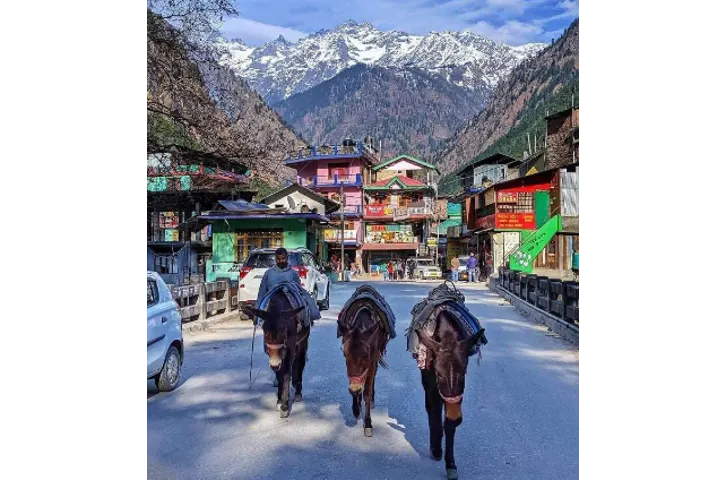
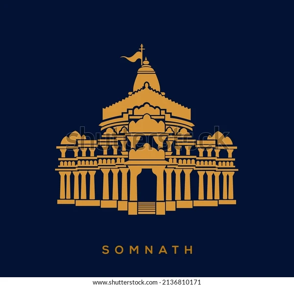

TRAVEL BLOCK
 Tourism in Himachal Pradesh is a major contributor to the state's economy and growth. The Himalayas attracts tourists from all over the world. Hill stations like Shimla, Manali, Dharamshala, Dalhousie, Chamba,
Khajjiar, Kullu and Kasauli are popular destinations for both domestic and foreign tourists.[73] The state also has many important Hindu pilgrimage sites with prominent temples like Shri Chamunda Devi Mandir, Naina Devi Temple, Bajreshwari Mata
Temple, Jwala Ji Temple, Chintpurni, Baijnath Temple, Bhimakali Temple, Bijli Mahadev and Jakhoo Temple.[74] Manimahesh Lake situated in the Bharmour region of Chamba district is the venue of an annual Hindu pilgrimage trek held in the month of
August which attracts lakhs of devotees.[75] The state is also referred to as "Dev Bhoomi" (literally meaning Abode of Gods) due to its mention as such in ancient Hindu texts and occurrence of a large number of historical temples in the state.[76]
Himachal is also known for its adventure tourism activities like ice skating in Shimla, paragliding in Bir Billing and Solang Valley, rafting in Kullu, skiing in Manali, boating in Bilaspur, fishing in Tirthan Valley, trekking and horse riding
in different parts of the state.[77] Shimla, the state's capital, is home to Asia's only natural ice-skating rink.[78] Spiti Valley in Lahaul and Spiti District situated at an altitude of over 3000 metres with its picturesque landscapes is popular
destination for adventure seekers. The region also has some of the oldest Buddhist monasteries in the world.[79] Himachal hosted the first Paragliding World Cup in India from 24 to 31 October in 2015.[80][81] The venue for the paragliding world
cup was Bir Billing, which is 70 km from the tourist town Macleod Ganj, located in the heart of Himachal in Kangra District. Bir Billing is the centre for aero sports in Himachal and considered as best for paragliding.[80] Buddhist monasteries,
trekking to tribal villages and mountain biking are other local possibilities. There are a variety of festivals celebrated by the locals of Himachal Pradesh who worship gods and goddesses. There are over 2000 villages in Himachal Pradesh which
celebrate festivals such as Kullu Dussehra, Chamba’s Minjar, Renuka ji Fair, Lohri, Halda, Phagli, Losar and Mandi Shivratri.[82] There approximately 6000 temples in Himachal Pradesh with a known one being Bijli Mahadev. The temple is seen as
a 20-meter structure built in stone which, according to locals, is known to attract lighting. They say that this is a way the Gods show their blessings.
 The Somnath temple, also called Somanātha temple or Deo Patan, is a Hindu temple located in Prabhas Patan, Veraval in Gujarat, India. It is one of the most sacred pilgrimage sites for Hindus and is believed to be first among the twelve jyotirlinga shrines of Shiva.[1] It is unclear when the first version of the Somnath temple was built with estimates varying between the early centuries of the 1st-millennium to about the 9th-century CE.[2][3] The temple is not mentioned in ancient Sanskrit texts of Hinduism as Somnath nomenclature but the "Prabhasa-Pattana" (Prabhas Patan) is mentioned as a tirtha (pilgrimage site), where this temple exists.[4] For example, the Mahabharata in Chapters 109, 118 and 119 of the Book Three (Vana Parva), and Sections 10.45 and 10.78 of the Bhagavata Purana state Prabhasa to be a tirtha on the coastline of Saurashtra.[5][6] The temple was reconstructed several times in the past after repeated destruction by multiple Muslim invaders and rulers, notably starting from an attack by Mahmud Ghazni in the 11th century.[7][8][9][10] The Somnath temple was actively studied by colonial era historians and archaeologists in the 19th- and early 20th-century, when its ruins illustrated a historic Hindu temple in the process of being converted into an Islamic mosque.[11][12][13] After India's independence, those ruins were demolished and the present Somnath temple was reconstructed in the Māru-Gurjara style of Hindu temple architecture. The contemporary Somnath temple's reconstruction was started under the orders of the first Home Minister of India Vallabhbhai Patel after receiving approval for reconstruction from Mahatma Gandhi. The reconstruction was completed in May 1951 after his death